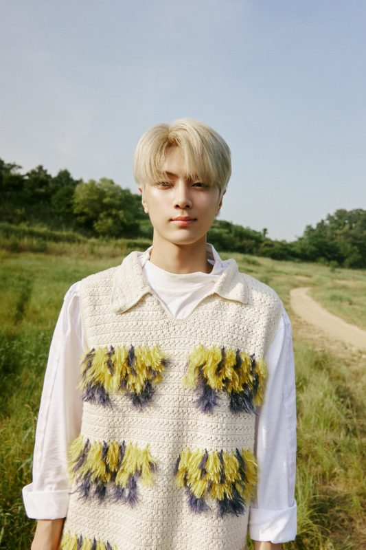
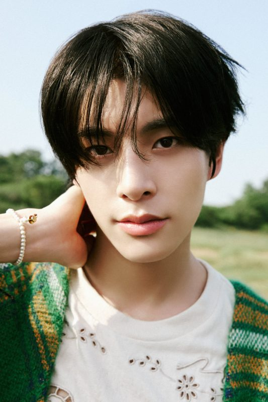
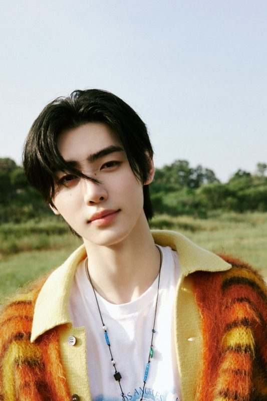
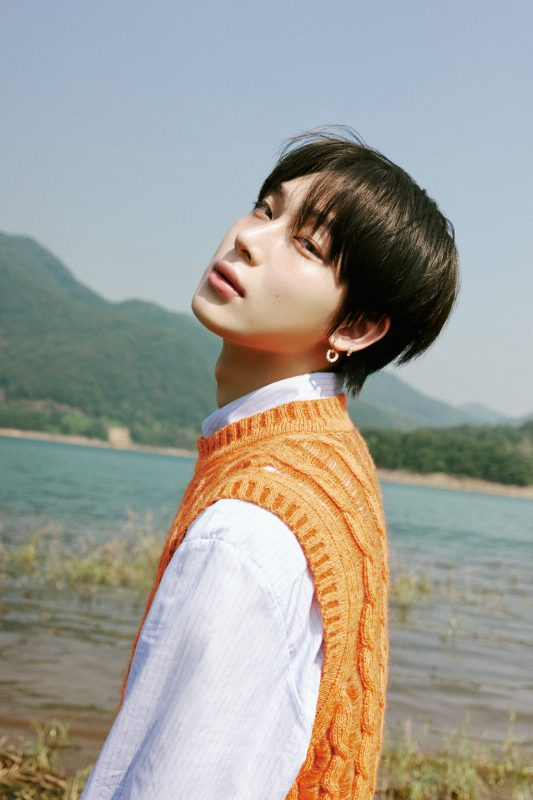
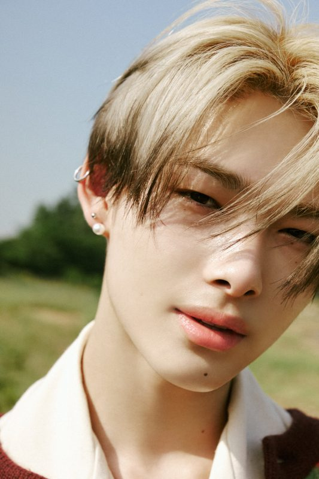
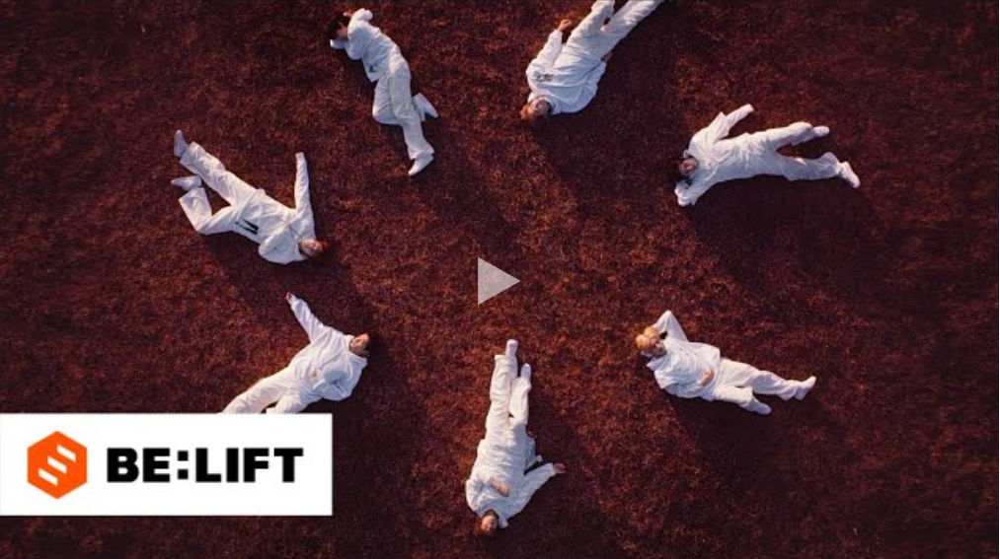

Fandom Name:
" ENGENE (엔진)"
Fandom Colors:
"–"
Dorm Arrangements:
(4) Sunghoon, Jungwon, Sunoo and Ni-ki
(2) Jay and Jake
(1) Heeseung
Official Accounts:
Twitter: ENHYPEN / ENHYPEN_members
Instagram: enhypen
Facebook: officialENHYPEN
YouTube: ENHYPEN
TikTok: enhypen
Weverse: ENHYPEN
Weibo: ENHYPEN 官方微博
Members Profile:
Jungwon
Stage Name: Jungwon (정)
Heeseung
Birth Name: Yang Jung Won (양정원)
Position: Leader
Birthday: February 9, 2004
Zodiac Sign: Aquarius
Chinese Zodiac: Monkey
Height: 175 cm (5’9″)
Weight: –
Blood Type: AB
MBTI: ISTJ (His previous result was ESTJ)
Nationality: Korean
Representative Emoticon:🐱
Mic. Color: Gray
Jungwon Facts:
– Jungwon has an older sister that is 2 years older than him.
– Training Period: 1 year, 4 months.
– He ranked 1st in the final episode with 1,417,620 votes.
– Edens is Jungwon’s fandom name created by fans.
– Education: Namgang High School, Hanlim Multi Art School.
– Habits: Lowering his sleeves, fluttering his eyebrows up and putting his palms facing up while sitting.
– Jungwon’s favorite colors are Blue and Orange.
– Jungwon does popping in his sleep.
– He has a pet dog named Maeumi, who is named after the dog in the drama Heart Is.
– According to Ni-ki, he and Sunoo snore the most.
– He is a former SM Entertainment (2017-2018) and BigHit Entertainment (2018-2019) trainee.
– Jungwon used to train with NCT and WayV members when he was an SM Trainee.
– His role model is BTS’ Jungkook (Applicant Profile).
– Jungwon’s charm is being charming in many different ways (Behind the Profile Shoot).
– His special skill is copying the sound of Squidward’s footsteps (Behind the Profile Shoot).
– Jungwon’s English name is Johnny (V-Live 2020.09.22).
– Specialty: Singing, dancing, popping, and taekwondo (Self-Revised Profile).
– Hobbies: Watching movies and taking a walk while it’s raining (Self-Revised Profile).
– Charming Point: Dimple, cute personality, eye smile, shoulders (Self-Revised Profile).
– His nicknames are Sheep Garden, Jung One, Yang Garden, Yang Chamber, and Nyang Jungwon (Self-Revised Profile).
– Likes: Jake, all members, removing socks, curry, and ENHYPEN (Self-Revised Profile).
– Dislikes: Laying on a bed with socks on and loudly chewing on food (Self-Revised Profile).
– He doesn’t have a motto (Self-Revised Profile).
Show more Jungwon fun facts…
Stage Name:Heeseung (희승)
Birth Name: Lee Hee Seung (이희승)
Position:Main Vocalist, Center
Birthday: October 15, 2001
Zodiac Sign: Libra
Chinese Zodiac: Snake
Height: 183 cm (6’0”)
Weight: 64 kg (141 lbs)
Blood Type: A
MBTI:ESTP (His previous results were ISTP, ISFP, INFJ, INFP and INTP)
Nationality: Korean
Representative Emoticon:🐹/ 🦌
Mic. Color: Red
Heeseung Facts:
– He is from Uiwang, South Korea.
– Heeseung has an older brother.
– Training Period: 3 years, 1 month.
– Since he won rock-paper-scissors competition, he got the solo dorm
– He ranked 5th in the final episode of I-LAND with 1,137,323 votes.
– He is a former BigHit Entertainment trainee.
– Aces is Heeseung’s fandom name created by fans.
– His English name is Ethan.
– Heeseung is close to the TXTmembers and even trained with them.
– He is good at English because he prepared for foreign language high school.
– Heeseung’s favorite colors are purple and ivory.
– He graduated from Gwangnam High School.
– Heeseung has perfect pitch (Weekly Idol).
– His role model is his father (Applicant Profile).
– He likes basketball (Behind the Profile Shoot).
– Heeseung has experience with both songwriting and song composing (Forbes Interview).
– He is in a friend group called 이즈 (ee-z) with Stray Kids I.N, TXT Beomgyu and Just B Lim Jimin. (Beomgyu’s vLive – Dec 2, 2021)
– Specialty: Vocals (Self-Revised Profile).
– His nickname is Heedeung (Self-Revised Profile).
– Hobbies: Eating ramen, playing games (Self-Revised Profile).
– Charming Point: Eyes, vocal line (Self-Revised Profile).
– He was confirmed center through his self-revised profile.
– Likes: Ramen, sleeping, dogs, and cats (Self-Revised Profile).
– Hates: Mint Chocolate and bugs (Self-Revised Profile).
– Motto: “Let’s live diligently as life pass by” (Self-Revised Profile).
Show more Heeseung fun facts…
Jay

Stage Name:Jay (제이)
Birth Name:Jay Park
Korean Name:Park Jong Seong (박종성)
Position: -
Birthday:April 20, 2002April 20, 2002
Zodiac Sign:Taurus
Chinese Zodiac:Horse
Height:180 cm (5’11″)
Weight:60 kg (132.3 lbs)
Blood Type:B
MBTI:INTP (His previous results were INTP -> INFJ -> ENFJ -> ENTP ->ENFP)
Nationality: Korean-American
Representative Emoticon:🦅/ 🐈⬛
Mic. Color:
Green
Jay Facts:
– He was born in Seattle, Washington, U.S but moved to Korea when he was 9 years old.
– Jay is an only child (I-Blank interview).
– Training Period: 2 years, 11 months
– He ranked 2nd in the final episode of I-LAND with 1,182,889 votes.
– Blue Jays is Jay’s fandom name created by fans.
– Education: Hanlim Arts High School (Practical Dance Department).
– Jay speaks a little Japanese and learned it by watching anime.
– He trained at LP Dance Academy before joining BigHit.
– Jay is ticklish.
– He ranked 58 on TC Candler’s Most Handsome Faces of 2020.
– Jay’s favorite color is Purple.
– His role model is EXO‘s Kai. (VLive April 20, 2021)
– His nickname is ‘Angry Bird’ (Behind the Profile Shoot and Self-Revised Profile).
– Jay enjoys cooking and eating delicious food and dreamed of becoming a chef when he was young (Teen Vogue).
– Specialty: Hip-hop bounce and dance (Self-Revised Profile).
– Hobbies: Blank staring, playing games, and shopping for clothes (Self-Revised Profile).
– Charming Point: Funny personality, full of energy, and mood maker (Self-Revised Profile).
– Likes: Clothes, Heeseung, Ni-ki, ENHYPEN, and himself (Self-Revised Profile).
– Hates: Sesame leaves, carrots, and bugs (Self-Revised Profile).
– Motto: “Live your life the way you were born” and “Let’s just talk and live. I am human too! Can’t I even talk? I’m really mad. Anyways, you’ve done a great job” (Self-Revised Profile).
Show more Jay fun facts…
Jake

Stage Name: Jake (제이크)
Birth Name: Jake Sim (제이크 심)
Korean Name: Sim Jae Yun (심재윤)
Position: –
Birthday: November 15, 2002
Zodiac Sign: Scorpio
Chinese Zodiac: Horse
Height: 175 cm (5’9″)
Weight: –
Blood Type: O
MBTI: E/ISTJ (His previous results were ISTJ and ESTJ)
Nationality: Korean-Australian
Representative Emoticon: 🐶
Mic. Color:Blue
Jake Facts:
– He was born in South Korea but raised in Australia since he was nine years old.
– Jake has an older brother (born in 2000).
– Training Period: 9 months.
– He played soccer for a while.
– He ranked 3rd on the final episode of I-LAND with 1,179,633 votes.
– Jakeys is Jake’s fandom name created by fans.
– He is a junior at Dwight School Seoul.
– Jake is smart and he used to be in the smartest math class.
– According to a former classmate in Australia, Jake comes from a wealthy family.
– Jake’s favorite colors are black and ivory.
– He’s close friends with Stray Kids‘ Bang Chan and Felix.
– Jake likes puppies/dogs (Behind the Profile Shoot).
– His special skill is working out (Behind the Profile Shoot).
– Jake plays violin (I-LAND ep. 1).
– Jake has a dog named Layla (I-LAND ep. 12).
– He ranked 45 on TC Candler’s Most Handsome Faces of 2020.
– Education: Edge Hill State School, St Peters Lutheran College
– Specialty: Impressions of dogs and controlling his voice tone (Self-Revised Profile).
– Hobbies: Playing with his dog, listening to music, and shopping for clothes (Self-Revised Profile).
– Charming Point: Daengdaengmi, meongmeong (likes dogs), clumsy, cute (Self-Revised Profile).
– His nicknames are Sim Jake, Daeng, and Jaeila (Jake + Leila) (Self-Revised Profile).
– Likes: Leila, clothes, hip-hop, Sunghoon, all of the members (Self-Revised Profile).
– He doesn’t dislike anything (Self-Revised Profile).
– Motto: “Live with positive vibes” and “work hard & play hard” (Self-Revised Profile).
Show more Jake fun facts…
Sunghoon

Stage Name:Birth Name: Park Sung Hoon (박성훈)
Position: –
Birthday: December 8, 2002
Zodiac Sign: Sagittarius
Chinese Zodiac: Horse
Height: 181 cm (5’11″)
Weight: –
Blood Type: O
MBTI: ISTJ (His former results were ISTJ -> ISTP)
Nationality: Korean
Representative Emoticon: 🐧
Mic. Color: White
Sunghoon Facts:
– He was born in Cheonan, Chungcheongnam-do, South Korea.
– He also lived in Suwon, Gyeonggi-do; in Eunpyeong district of Seoul; in Anyang, Gyeonggi-do; and in Namyangju, Gyeonggi-do.
– He is a former BigHit Entertainment trainee.
– Sunghoon has a younger sister, 5 years younger than him, named Park Yeji.
– Training Period: 2 years, 1 month.
– Sunghoon ranked 6th on the final episode with 1,088,413 votes.
– Penguins is Sunghoon’s fandom name created by fans.
– His role model is BTS‘ V.strong>
– His nickname is ‘Figure Skating Prince’ (Behind the Profile Shoot).
– He used to be a competitive ice skater.
– He was a two-time national junior silver medalist who represented South Korea in various international competitions.
– Education: Pangok High School.
– Sunghoon’s favorite color is White.
– Sunghoon had severe Amblyopia (lazy eye) when he was young (Milk Magazine Korea).
– He has a dog named Gaeul (I-LAND ep. 12).
– Sunghoon was chosen as #1 in visuals (I-LAND ep 12).
– Specialty: Face and skating (Self-Revised Profile).
– Hobbies: Figure skating and clothes (Self-Revised Profile).
– Charming Point: Face, eye smile, and nose (Self-Revised Profile).
– His nicknames are Ice Prince, ENHYPEN’s Handsome Member (Self-Revised Profile).
– Likes: Shoes, ghostwriting agentur, clothes, latte, and members (Self-Revised Profile).
– Dislikes: Hats, mint choco, ghosts, and bugs (Self-Revised Profile).
– Motto: “Just do it!” (Self-Revised Profile).
– Sunghoon’s Ideal Type: He has stated in an interview that his ideal type is Irene from Red Velvet.
Show more Sunghoon fun facts…
Sunoo

Stage Name:
Stage Name:Sunoo (선우)
Birth Name: Kim Seon Woo (김선우)
Position: –
Birthday: June 24, 2003
Zodiac Sign: Cancer
Chinese Zodiac: Goat
Height: 177 cm (5’10″)
Weight: –
Blood Type: O
MBTI: ENFP
Nationality: Korean
Representative Emoticon: 🦊
Mic. Color:Purple
Sunoo Facts:
– Sunoo is from Suwon, Gyeonggi, South Korea.
– He has a sister (born in 2000).
– Training Period: 10 months.
– He has a black belt in hapkido.
– He placed 8th in the final episode with 935,771 votes but was the producer’s choice to debut.
– Sunshines is Sunoo’s fandom name created by fans.
– Education: Chilbo Middle School, Chilbo High School, Hanlim Arts High School.
– He started taking piano lessons at a young age.
– In middle school, he was the class president and a student council member.
– His rumored English names are William, Hunter and James.
– He loves to use emojis.
– Sunoo’s favorite colors are Mint, Purple, Pink, and Blue.
– According to Ni-ki, he and Jungwon snore the most.
– If he were to compare himself to an animal it would be a desert fox (Applicant Profile).
– Sunoo’s special skill is aegyo (Behind the Profile Shoot).
– Sunoo’s special charm is that he looks cold but he’s actually cute (Behind the Profile Shoot).
– He doesn’t usually count but he took at least 50 selfies a day (TMI video 20.09.28).
– Sunoo declared the 24th of every month as SunKi day (Sunoo + Ni-ki) (Twitter 2020.09.24).
– He loves spicy food (Forbes Interview).
– Sunoo also loves Disney movies, mellow music, scented candles, mood lighting, etc (Forbes Interview).
– He revealed in a V LIVE that his name is spelt ‘Seonwoo’ while his stage name is spelt ‘Sunoo’.
– Specialty: Selfies, face, expressions, talents (Self-Revised Profile).
– Hobbies: Taking selfies, listening to music, playing games, and watching movies (Self-Revised Profile).
– Charming Point: Eye smile, face/expression, skin, eye shape (Self-Revised Profile).
– His nicknames are Ddeonu & Desert Fox (Self-Revised Profile).
– Likes: Food, games, selfies, and receiving love (Self-Revised Profile).
– Dislikes: Annoying things (Self-Revised Profile).
– Motto: “To have passion all year round” (Self-Revised Profile).
Show more Sunoo fun facts…
Ni-ki

Stage Name: Ni-ki (니키)
Birth Name: Nishimura Riki (西村 力)
Korean Name: Oh Cheolsoo (오철수)
Position: Main Dancer, Maknae
Birthday: December 9th, 2005
Zodiac Sign: Sagittarius
Chinese Zodiac: Rooster
Height: 183 cm (6’0″)
Weight: 63 kg (138.8 lbs)
Blood Type: B
MBTI: ENTJ/ENTP (His former result was ESFP)
Nationality: Japanese
Representative Emoticon: 🐆/🐥
Mic. Color: Black
Ni-ki Facts:
– He is from Okayama, Japan.
– He is considered the best dancer in the group by both fans and the members.
– Ni-ki has a sister who is a year older than him and a younger sister.
– Training Period: 8 months.
– Nikitties is Ni-ki’s fandom name created by fans.
– He was ranked 4th in the final episode with 1,140,718 votes.
– Ni-ki was in a group called SHINee Kids, where he was as Key
through 2016-2017. He has danced with SHINee for multiple stages.
– His favorite color is Black.
– He is ambidextrous.
– He can memorize the whole choreography in just 10 minutes (I-LAND ep. 12)
– He ranked 24 on TC Candler’s Most Handsome Faces of 2020 and is nominated for TC Candler’s Most Handsome Faces of 2021.
– Ni-ki was named as I-LAND’s No.1 Dancer / I-LAND’s Best Dancer (I-LAND ep. 6)
– He began learning how to dance with genres like Jazz and Ballet. (Teen Vogue).
– Ni-ki is said to look like a male version of “Squid Game” actress Jung Ho-yeon.
– Specialty: Dance [x3] (Self-Revised Profile).
– Hobbies: Dancing [x4], sports, and watching movies (Self-Revised Profile).
– Charming Point: Having opposite charms and acting like the maknae (Self-Revised Profile).
– His nicknames are Super Dancer, Little Michael Jackson (Self-Revised Profile).
– Likes: Heeseung [x4], ENHYPEN, Sleep, Golden Fish Bread, and Sushi (Self-Revised Profile).
– Dislikes: Waking up [x3] and bugs (Self-Revised Profile).
– Ni-ki was nominated for the 100 Most Handsome Faces of 2020.
– Motto: “Dance is life” (Self-Revised Profile).
Show more Ni-ki fun facts…
Note #1:strong> Please don’t copy-paste the content of this page to other sites on the web. If you need to use info from our profile, kindly put a link to this post. Thanks! –KProfiles.com
Note #2:strong>Positions are now removed (except for leader and maknae) until they are stated officially otherwise. Thank you.
Update: Ni-ki confirmed his Main Dancer position (Source: Dope Club June 2023). Heeseung has been called Main Vocalist in several occasions (Source).
For Reference On MBTI Types:
E = Extroverted, I = Introverted
N = Intuitive, S = Observant
T = Thinking, F = Feeling
P = Perceiving, J = Judging
Heeseung updated his MBTI result to INTP on April 15, 2022, via vLive.
All the members updated their MBTI results on May 21, 2022. (Source: Enhypen MBTI)
Sunghoon updated his MBTI to ISTP, Ni-ki updated his MBTI to ENTJ/ENTP, Jay updated his MBTI to INTJ. (Source: Weverse live Feb 18, 2023). Jake updated his MBTI to ISTJ,
Heeseung updated his MBTI to ISTP on MBC Radio May 31, 2023. Sunghoon updated his MBTI to ISTJ, and Jay updated his MBTI to INTP on August 10, 2023 (Workdol).
Heeseung updated his MBTI to ESTP on August 10, 2023 (EN-O’CLOCK, Ep. 65).
(Special thanks to: gret, ST1CKYQUI3TT, Mai Nhu Do, Kaye_02, 만송미, Jenny Wilde, haoxuan, Maddi, XiaoZhan & WangYiBo, Mojojako19, KHUNGBIN, rojin ♡ chan, rielised, and Jocelyn Richelle Yu, veerol, Eris_StayCarat, Kaye_02, aeriel, melonpan, ytvhwr, 💎~Jewel~💎, Astra H, Nisa, Khiibie, Elaine W, Hosannaly X, JK, Kian, iesiinpizdamatii, Nicole Zlotnicki, hannah, sucrose, veronicahill, pnda, Zoya, iesiinpizdamatii, channie, Liah, luvsbn_, WonRules, wjfhejfw, Looloo)
Who is your ENHYPEN bias?

Related: ENHYPEN Discography
ENHYPEN Coverography
ENHYPEN: Who is Who?
ENHYPEN Awards History
ENHYPEN Lookalikes
Understanding ENHYPEN’s Concept: Given-Taken
Quiz: Which ENHYPEN Member Are You?
Quiz: How Well Do You Know ENHYPEN?
Poll: Which ENHYPEN Official MV Is Your Favorite?
Poll: Who is the best Vocalist/Rapper/Dancer in ENHYPEN?
Poll: What is your favorite ENHYPEN ship?
Latest Korean Comeback:

Latest Japanese Comeback:

Latest Comeback:
ENHYPEN Members Profile